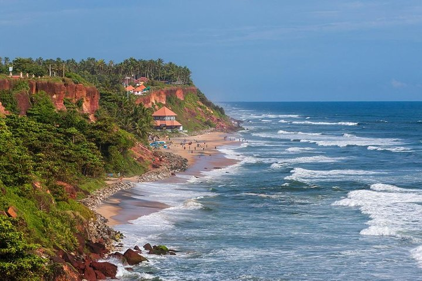

Varkala beach

Varkala is located in South India, Kerala (God’s Own Country), Varkala beach, one of the Top 10 beaches in India, rated 3rd place by Tourists, and one of the First 30 Tour Destinations in the Planet, rated 28th place among the 100 top ‘Best Value Index’ around the globe. The main beach is Papanasam beach. The word Papanasam means washing away sins. The legend says, that to take a dip in the waters of Papanasam Beach washes away all the sins in one’s life.
Shiva Garden Home Stay is located 5 min. walking distance from Papanasam beach, 10 min by rickshaw from Varkala town and 20 min from the picturesque Backwaters.
The best time to visit Varkala is between October to March, when the weather is pleasant, the sky is clear, and the evenings are cool. The beaches are perfect for sunbathing, swimming, and beach activities. These months are the best for activities like paragliding, parasailing, jet skiing, etc.
Sree Padmanabhaswamy Temple

Across the world, the Sree Padmanabhaswamy Temple is renowned for its beauty and grandeur. Dedicated to Lord Vishnu, it is one of the 108 sacred Vishnu temples or 'Divya Deshams' in India. The great King of Travancore, Marthanda Varma is said to have done the renovation work that we see today.
Sri Padmanabhaswamy is considered the principal deity of the Royal Family of Travancore. They were also the greatest devotees of the Lord. The origin of this is traced back to the reign of Maharaja Marthanda Varma who took an epoch-making decision that changed the lives of the members of the Royal Family.